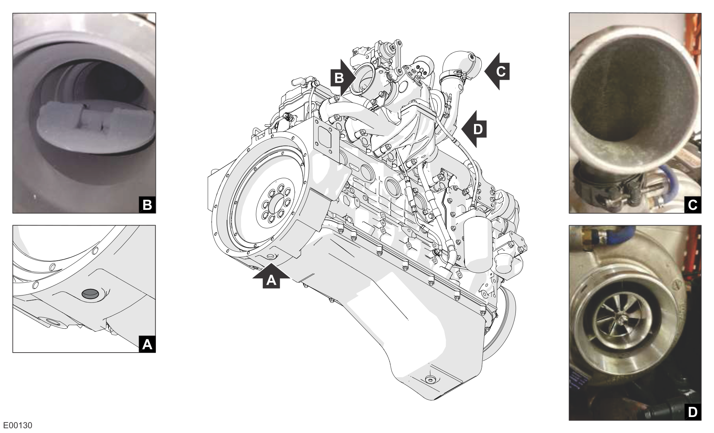
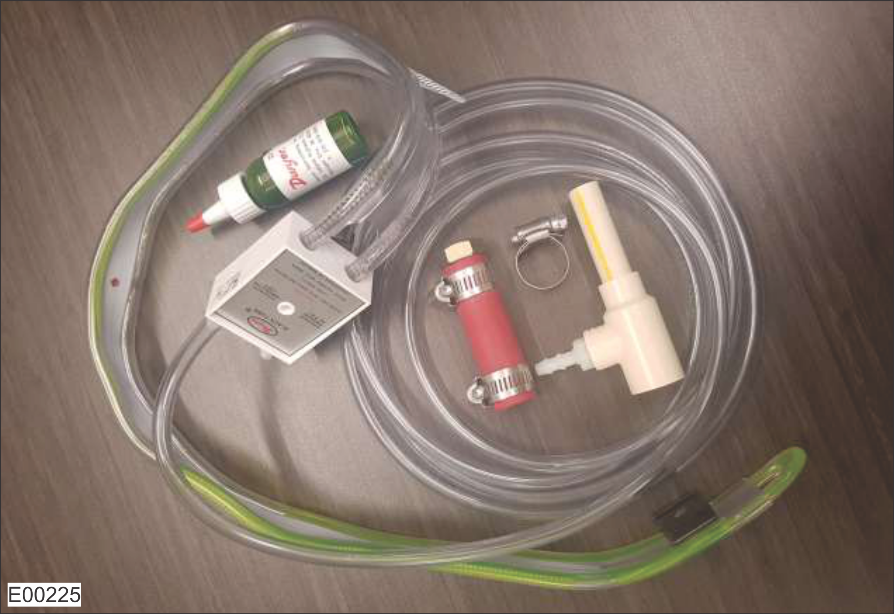
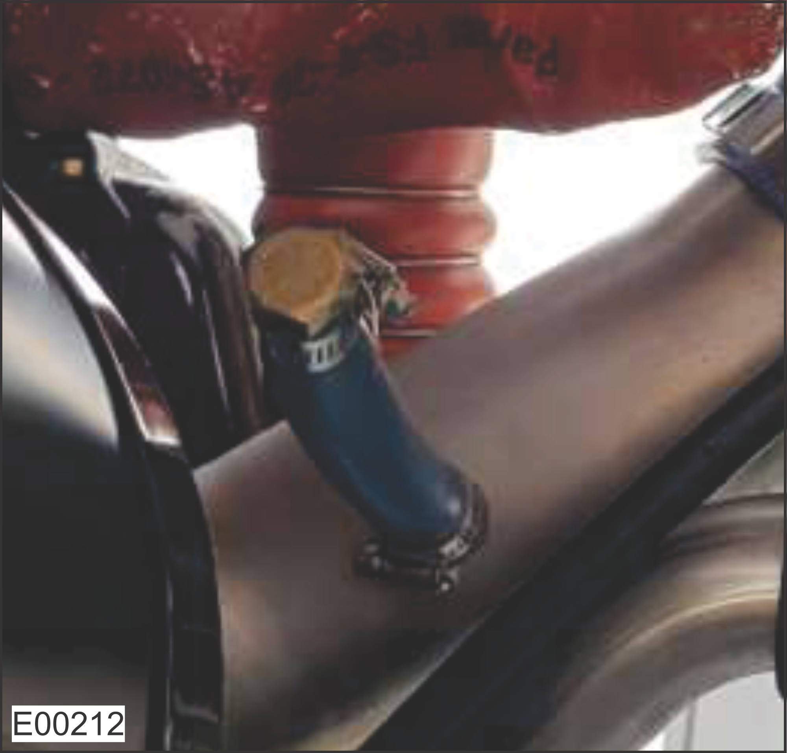
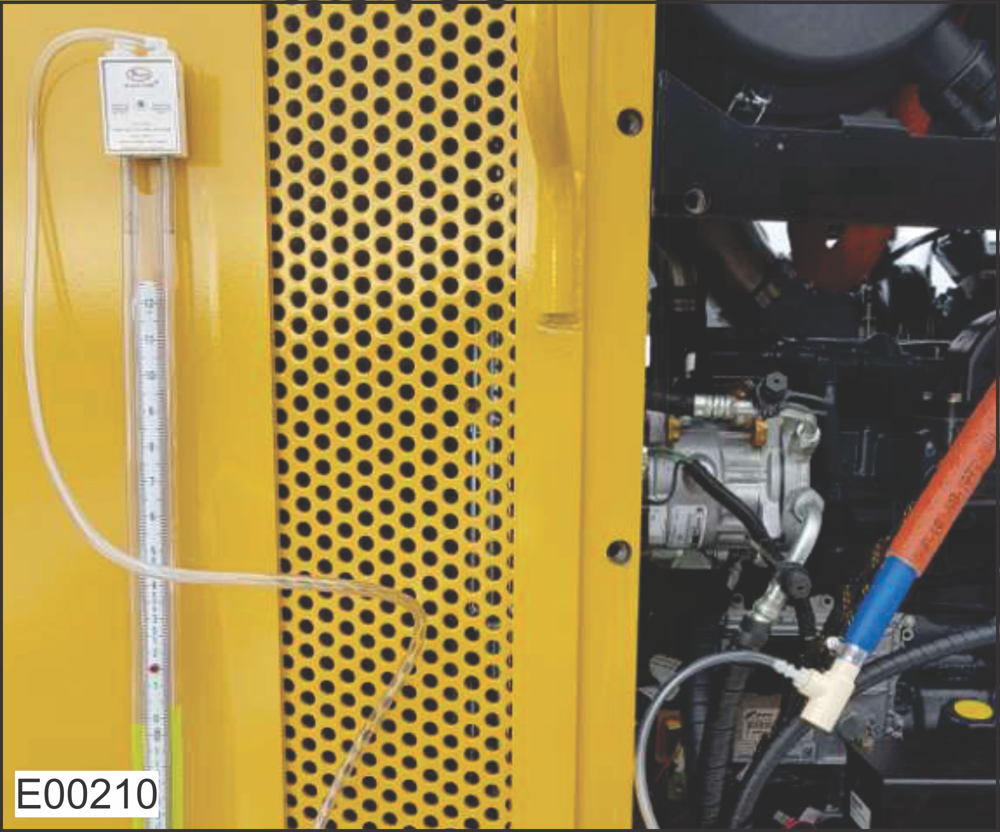
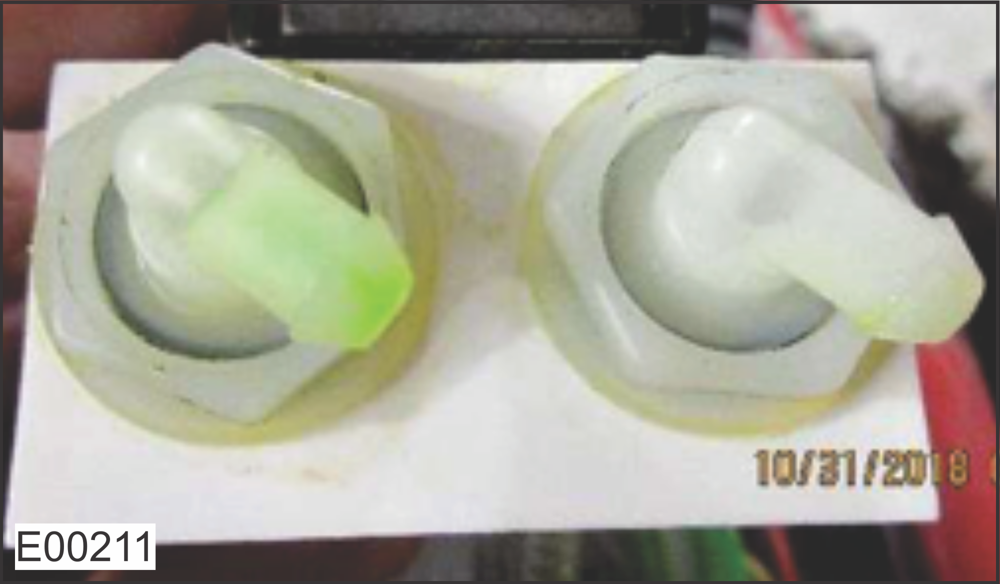
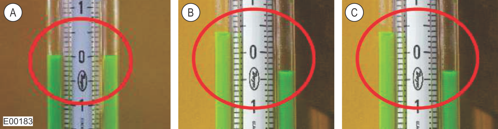

Engine Oil Consumption
Note
Allow a minimum of 500 engine hours break-in period before performing this procedure.
Note
DO NOT replace the engine unless authorized by the Tigercat Industries Service Department.
This troubleshooting procedure is completed in four phases:
Perform the Dealer Procedure (0 Hours).
Operate the machine normally for 250 hours and record every time engine oil is added to the machine. See Operator Procedure (Oil Consumption Recording After Replacing the Oil).
Perform the Dealer Procedure (250 Hours) and send all recorded data to the Tigercat Industries Service Department.
If oil consumption is deemed excessive by Tigercat Industries, perform the Crankcase Pressure Test.
Perform a full visual inspection of the engine to identify and repair any leaks before starting. Pay particular attention to the crank seals and the turbo inlet/outlet ports shown below. If any leaks are detected, take a clear picture or video of the affected area and send it to the Tigercat Industries Service Department.

A
Oil Inspection Port on Flywheel Housing
B
Exhaust Flap
C
Turbo Compressor Inlet
D
Turbo Compressor Outlet
Record the vacuum reading, then inspect and clean the air intake pre-cleaner and remove any debris/buildup surrounding it. You will need to unbolt the pre-cleaner on some machines to properly inspect and clean it at the inlet screen. The image below is an example.

A
Remove and Clean the Air Intake Cleanout Covers (If Equipped)
B
Remove the Precleaner
C
Clean the Precleaner Inlet Screen
Reset the air filter restriction indicator. Operate the machine for a few minutes to confirm the new vacuum reading with a clean pre-cleaner.

A
Filter Restriction Indicator Reset Button
B
Filter Restriction Indicator
C
Filter Restriction Threshold (25 inH20 or 6.2 kPa)
Replace the primary filter element if the indicator returns to the red zone, and replace the secondary (safety) filter with every third primary filter change.
Verify that the air filter O-ring is present and seated correctly. Replace if damaged or missing.

A
O-Ring Correctly Seated
Run the engine at high speed and no load, then read the air intake vacuum measurement and record it in the Oil Consumption Chart at the end of this procedure (Start of 250 Hours reading).
If equipped with an air filter restriction sensor, read the air intake vacuum reading (kPa/inH2O) from the computer display.

If not equipped with an air filter restriction sensor, read the air intake vacuum reading (kPa/inH2O) directly from the air filter restriction indicator.
See the following table and figures for vacuum limits and the location of reading in the display modules. The maximum allowable vacuum limit is 6.2 kPa (25 inH2O) with a warning set to 5.5 kPa (22 inH2O). Any values below the warning level are acceptable.
Machine Model/Series
Warning Level
Limit Level
Warning Indicator
Limit Indicator
Limit Message
1075C, 1085C
-
6.2 kPa (25 inH2O)
-
Message
Alert
234, 250D
5.5 kPa (22 inH2O)
6.2 kPa (25 inH2O)
Message
Critical
470,480
M726,T726,718
-
6.2 kPa (25 inH2O)
-
Message
Alert
600E
-
6.2 kPa (25 inH2O)
-
Message
Alert
800D, 800E
5.5 kPa (22 inH2O)
6.2 kPa (25 inH2O)
Message
Alert
Replace the crankcase ventilation (CCV) filter if the previous interval is greater than 500 hours.
Begin data recording at the next oil service interval after taking an oil sample, replacing the oil, and replacing the filter.
Position the machine on flat, level ground.
Engine oil level dipstick validation.
Drain oil, replace the filter.
Measure out the required amount of 15W40 engine oil and then fill the sump through the oil filler neck (not rocker cover). DO NOT assume that the oil supplier container has the stated volume.
Engine
Oil Sump at 'MAX' Line On the Dipstick (Litres)
N45
10.5
N67
14
C87
25
Confirm oil is at the 'MAX' line on the dipstick and contact the Tigercat Industries Service Department if it is not.
Run the engine for several minutes.
Add the necessary oil to raise the level to the 'MAX' line on the dipstick.
Retrieve the following data:
Machine serial number
Machine hours
Engine hours
Clone with logs (IQAN)
Data stored (PT-Box)
Fault codes (PT-Box)
The vacuum reading from the filter restriction indicator before and after cleaning/checking the pre-cleaner and main filter.
Wait until the machine has operated for 250 hours, then perform the Dealer Procedure (250 Hours).
Record information in the Oil Consumption Chart at the end of this procedure; all fields are mandatory.
Park the machine on level ground and check the oil at the start of every shift BEFORE starting the engine.
If oil is added, record volume, date, and engine hours.
After 250 hours, notify the dealer to perform a final inspection.
After 250 hours, record the air intake vacuum reading in the oil consumption chart.
Retrieve and submit a second oil sample to the same company as the previous oil sample.
Retrieve the following data:
Machine serial number
Machine hours
Engine hours
Clone with logs (IQAN)
Data stored (PT-Box)
Fault codes (PT-Box)
The vacuum reading from the filter restriction indicator.
Send all data recorded during the Dealer Procedure (0 Hours) and during the previous step (250 hours) to the Tigercat Industries Service Department. If oil consumption is deemed excessive by Tigercat Industries, perform the Crankcase Pressure Test.
The following procedure outlines steps to validate engine crankcase pressure on Tigercat by FPT engines while using the manometer tool kit 88785B. Refer to the instruction manual provided with the kit for further details.
Manometer tool kit (88785B)

Replace the CCV filter(s).

Install a short hose from the kit with plug to block the CCV port at the air intake tube.

Keep one end of the CCV hose connected to the CCV filter box and the other connected to the T-fitting from the Manometer kit. Connect the Manometer hose to the T-fitting. Install the Manometer on the frame of the machine.

Loosen both shut-off valves counterclockwise 1/2 turn before connecting a 1/4 in tube to any of the two fittings.

Take the crankcase pressure measurements:

A
Fluid Equalized (Engine Stopped)
B
Crankcase Pressure with Engine at Low Speed
C
Crankcase Pressure with Engine at High Speed
Note
The images above are for reference only and may not reflect what you see on your machine. These images show crankcase pressure measurement at 0.14 kPa (0.6 inH2O) (the difference between the high and low sides of the manometer). Excessive crankcase pressure was measured at 2.5 kPa (10 inH2O).
With the engine STOPPED, confirm that the fluid is equalized on each side of the scale; re-position the manometer if needed.
Measure and record crankcase pressure with the machine at operating temperature at low speed under no load. Allow the reading to stabilize for 1 minute, then record the difference between the two sides of the manometer.
Measure and record crankcase pressure with the machine at operating temperature at high speed under no load. Allow the reading to stabilize for 1 minute, then record the difference between the two sides of the manometer.
Disconnect the 1/4 in tube and tighten both shut-off valves shut by turning clockwise.
Remove the short hose from the air intake pipe and reconnect the CCV hose from the filter box.